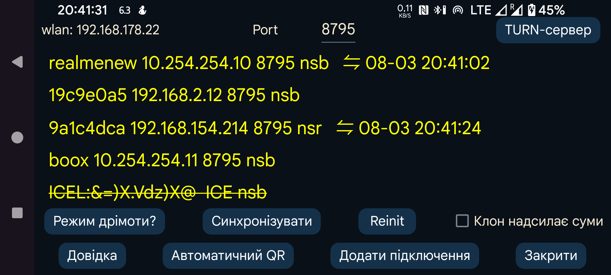

ar be de es fr hi it ja nl pl pt ru sv tr uk uz zh en

Надсилайте дані на інший пристрій або отримуйте їх з нього. Можна підключитися до пристрою Android із Juggluco, щоб відображати дані так само, як тут. Після отримання даних сканування дзеркальний пристрій також може підключитися до датчика через Bluetooth. Щоб із датчиком зв’язувався лише один пристрій, параметр «ліве меню→Датчик→Використовуйте Bluetooth» автоматично вимикається, коли потокові значення надходять через IP/TCP.
На цьому екрані після «WLAN» показано локальну IP-адресу Wi-Fi цього пристрою. Уведіть її на іншому пристрої в домашній мережі, до якого підключаєтеся, або на модемі для віддаленого підключення.
Після поля Port можна змінити TCP-порт, на якому ця програма очікує з’єднань.
Натиснувши Додати підключення , можна вказати вузли для підключення та спосіб зв’язку.
В Android надійні мережеві з’єднання порушуються різними оптимізаціями батареї й фоновими обмеженнями. Кнопка Режим дрімоти? допомагає змінити ці налаштування.
Клон надсилає суми:Якщо ця програма отримує значення ліків, їжі й активності від Juggluco на іншому пристрої, тут не слід додавати або змінювати їх. Увімкнення цього параметра забороняє такі дії.
Синхронізувати надсилає нові дані підключеному пристрою, якщо вони є, або запитує нові дані.
Reinit: закриває наявне з’єднання та створює нове.
Автоматичний QR: створює з’єднання для надсилання всіх даних із цього телефона до Juggluco на іншому. Інший телефон має відсканувати QR-код через ліве меню→Фото.
Wifi (лише Wear OS): якщо параметр не встановлено, Wear OS через деякий час автоматично вимикає Wi-Fi для заощадження батареї, а Juggluco переходить на Bluetooth для зв’язку між телефоном і годинником. Якщо параметр увімкнено, Wear OS отримує запит не вимикати Wi-Fi, тому він працюватиме довше, хоча все одно може вимкнутися. Зазвичай цей параметр не потрібен; розробники Wear OS вважають, що постійний Wi-Fi значно збільшує витрати батареї.
Наявні з’єднання показано списком: відображаються мітка, IP-порт, а також місяць, день і час останньої успішної синхронізації.
Спосіб використання з’єднання позначається так:
n: значення (числа)
s: сканування
b: потік (Bluetooth)
r: отримання
Докладніше про дзеркальні з’єднання читайте в довідці «Додати підключення» і на сторінці https://www.juggluco.nl/Juggluco/index.html#mirror
Програму Juggluco для Android можна запустити на комп’ютері з Windows, macOS або Linux за допомогою емулятора Android, наприклад Genymotion. Якщо ви використовуєте Linux, наприклад Ubuntu у MS Windows, можна також скористатися Waydroid. Juggluco в емуляторі отримує дані через дзеркальне з’єднання від телефона Android, підключеного до датчика. В емуляторі Android Studio та Genymotion жест масштабування двома пальцями можна імітувати, утримуючи клавішу Control і рухаючи вказівник миші. Waydroid цього не підтримує, але Juggluco реалізує таку взаємодію самостійно.